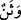
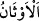
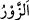

Allah’ın koyduğu sınırları koruyun. Putlara tapanların bahîra, sâibe (bk. el-Mâide,
5/103) ve benzeri hayvanları haram saymaları gibi Allah’ın helal kıldığı şeyleri haram
kılmaktan; vurulup öldürülen, leş ve benzeri hayvanları yemek gibi haram kıldığı şeyleri
de helal kılmaktan sakının.
“O halde, pislikten, putlardan sakının” yani pislik demek olan putlardan,
pisliklerden sakınıldığı gibi onlara ibâdet etmekten sakının. “er-Rics (pislik)” dört türlü
olur: Tabîat bakımından, akıl cihetinden, şerîat cihetinden ve bütün cihetlerden pis olan
şeylerdir. Leş tab‘an, aklen ve şer‘an iğrenilen şeyler türündendir. Şerîat cihetinden pis
olana örnek içki, kumar ve putlardır.
“__WORD__, “__WORD__ kelimesinin çoğuludur. el-Müfredât’ta belirtildiği üzere ibâdet edilen
taş demektir. Bâzıları demiştir ki: “el-Vesen” ile “es-Sanem” arasındaki fark şudur: “es-
Sanem” ağaç, altın veya gümüşten insan sûretinde oluşturulan puttur. “el-Vesen” ise
böyle değildir.
el-İrşâd da der ki: “O halde, pislikten, putlardan sakının…” sözü, “Her kim,
Allah’ın emir ve yasaklarına saygı gösterirse…” sözünün ifâde ettiği Allah’ın emir ve
yasaklarına riâyet ile onları ihlâl etmekten sakınmanın vâcib olması hususuna göre tertib
olunmuştur. Koyun, sığır ve deve gibi hayvanların helâl olduğunun açıklanması,
sakınılması gereken şeylerle değil, ihsân edilen şeylerle ilgili olduğu için ardından
haramlardan sakınılması zorunlu olan şeyler getirildi. Sonra da haramların en
büyüğünden sakınılması emredildi. Sanki şöyle buyrulmuş oldu: “Her kim, Allah’ın
emir ve yasaklarına saygı gösterirse, bu kendisi için daha hayırlıdır. Hayvanlar haram
kılınanlardan değildir. Size haram olduğu okunanların dışındaki hayvanlar sizin için
helâl kılınmıştır. Size haram olduğu okunanlardan sakınmak gerekir. Sakınılması
gereken büyük günahlardan sakının.”
“Yalan sözden sakının.” Bu ifâde genel bir ifâdeden sonra gelen özel bir ifâdedir.
Çünkü putlara tapmak yalanın başıdır. Müşrik putun kendisine ibâdeti hak ettiğini iddiâ
eder. Sanki şöyle buyruluyor: “Yalanın başı olan putlara tapmaktan sakının ve yalan
sözün hepsinden sakının. Bunların hiç birine yaklaşmayın.” Sanki âyette ilâhî emir ve
yasaklara dikkat ve riâyete teşvikin peşinden kâfirlerin haram saydığı bahîre, sâibe,
vasîle gibi hayvanları haram saymaları ve bu hükmü Allah’ın verdiği iftirâsında
bulunmaları reddedilmiştir. Yalan söz söylemekten mutlak olarak sakının, demektir.
Burada yalan şâhidlikte bulunmanın kastedildiği de söylenmiştir. Çünkü rivâyet
edildiğine göre Rasûlullah (s.a.) üç defa: “Yalan şahidlik, Allah’a ortak koşmaya denk
tutulmuştur.” buyurmuş, sonra da bu âyeti okumuştur.[28] Hazreti Ömer (r.a.), yalan
şahidlik edene kırk değnek vurur, yüzünü kömürle karartır ve bu hâliyle onu çarşılarda
dolaştırırdı.
Yalan anlamındaki “__WORD__ kelimesi, sapmak anlamındaki “__WORD__den alınmıştır. Çünkü
yalan, olandan sapmış ve çevrilip döndürülmüştür.
et-Te’vîlâtü’n-Necmiyye’de der ki: “Yalan söz” dilden çıkan kalbin desteklemediği
her sözdür. Kim sıdk ile taleb konusunda kalbiyle Allah’a söz verir, sonra da bunu